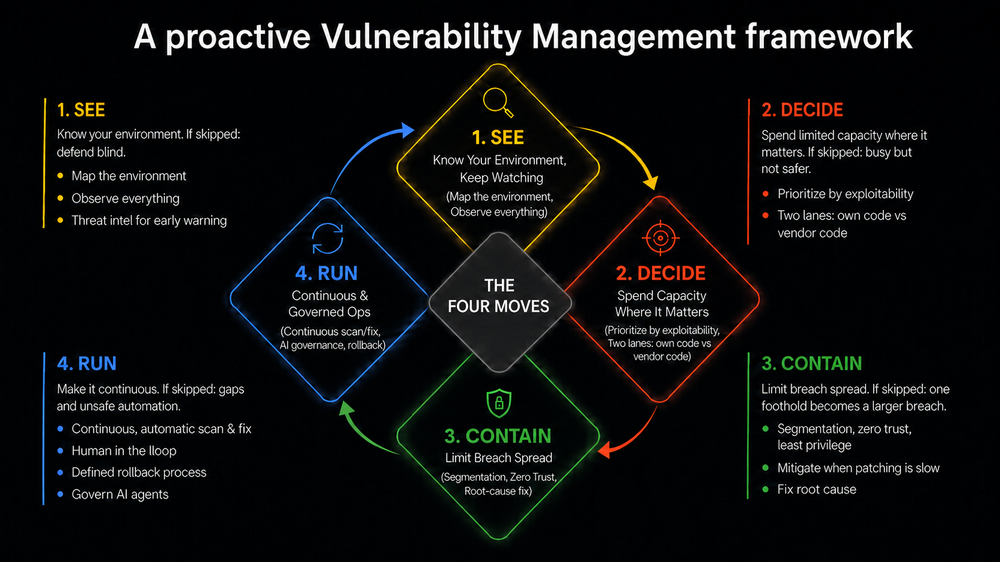

AI made finding vulnerabilities cheap. The attackers noticed. The answer isn't panic — it's the fundamentals done well at scale. A playbook in four moves.
Let's call it what the industry is calling it: the vulnerability apocalypse. For years, finding vulnerabilities was slow, expensive, specialized work. LLMs made it cheap — in its first weeks, one frontier model surfaced more than 23,000 issues across a thousand open-source projects, including a 27-year-old flaw in OpenBSD found for under $20,000 in compute. And when finding bugs gets cheap, attackers find more of them — and likely exploit more of them, faster than defenders can patch. This isn't hypothetical: Google's threat intelligence team has already reported the first zero-day exploit built with AI, caught being used in the wild. The deluge is real, and it's here.
Since Mythos, AI-powered defenses have emerged just as fast: autonomous agents that find and fix vulnerabilities in source code, tools that rewrite code to eliminate whole classes of bugs, frontier models utilized by defenders.
But here's what gets lost in the arms race: the fundamentals are more important now than they have ever been. When you can't out-find or out-patch the machines, what saves you is the boring, durable work done well — knowing your environment, limiting how far a break-in can spread, fixing root causes. AI raises the ceiling on both attack and defense; it doesn't change what good defense is made of. And defending against AI-speed attacks doesn't always require AI — sometimes it just requires the fundamentals, done well at scale.
Why the urgency is real (and different this time)
Why act now, if you've heard "do the fundamentals" for twenty years? Because the gap between discovery and exploitation is effectively gone — according to some sources, high-severity flaws are now exploited within hours, sometimes before a public proof-of-concept exists, and the damage is material, widespread, and accelerating.
A program that assumes days or weeks to respond was built for a world that no longer exists. The fundamentals — visibility, segmentation, process — are what absorb the shock when patching inevitably falls behind. And this holds whether AI capabilities jump or improve gradually: the actions needed today are largely the same.
AI made finding vulnerabilities cheap. The attackers noticed. The answer isn't panic — it's the fundamentals done well at scale.
Start by reverse-engineering the impossible
Before any playbook, one exercise — because it does more to find your real gaps than any framework will.
Imagine you could patch any vulnerabilitywithin 15 minutes of its release, as if by magic. Now work backwards: what would have had to be true? You'd need to know instantly what you run and where it's exposed. You'd need testing so automated that a fix ships safely in minutes. You'd need no legacy that resists change, and an architecture built to absorb it. You'd need to have already eliminated whole classes of bugs, so there were fewer to patch at all.
You will never hit 15 minutes across the environment — legacy systems guarantee it. But the gap between that fantasy and your reality is the most honest map you will ever get of where your program breaks. Every item in the playbook below is something that this exercise surfaces.
The Playbook: Fundamentals at AI Scale and Speed
Each of these is written as what to do and how to actually get it done — because the advice-to-adoption gap is where most programs die.
SEE→DECIDE→CONTAIN→RUN

The four moves — SEE → DECIDE → CONTAIN → RUN.
1SEE— know your environment, and keep watching
The playMap your environment (configuration graph) — what you run, what's exposed to the internet, and how far one compromise can spread. Then keep watching: observability across your own environment, and threat intelligence for the outside view, so you know the moment a bug in vendor software starts being exploited in the wild.
The advantageThe graph pays for itself immediately — dead code, unused open-source packages, and forgotten internet-facing servers you can simply remove — and it's the asset list every other move depends on. Threat intel buys you early warning: you hear a vendor bug is being exploited when it's announced, not when it hits you, so a compensating control can be in place before an attacker arrives.
If you skip itYou defend blind — the breach starts at the asset you didn't know you owned, and you learn about it from someone else.
2DECIDE— spend your limited capacity where it matters
The playPrioritize by real exploitability, not raw severity — a "medium" on an internet-facing service one hop from customer data beats a "critical" on an isolated internal box (recently, chains of Lows and Mediums were used in real compromises as well). Run two lanes: your own code you can fix, refactor, or rewrite; vendor code you can't touch, so that lane is compensating controls and faster detection.
The advantageYour finite capacity goes to the few findings that could actually hurt you — and every flaw gets a response you can execute: a fix where you can, a shield where you can't.
If you skip itBusy but not safer — capacity burned on findings no attacker could reach while the one exploitable path stays open, and months of exposure waiting on a vendor patch you could have mitigated in days.
3CONTAIN— make sure one bug can't become a breach
The playSegmentation splits the environment so a foothold in one place can't reach the rest. Zero trust and least privilege make every person, service, and AI agent prove each request — and grant only the access it needs. When you can't patch fast, mitigate: block the exploit path or take the exposed component offline. And when the same bug class keeps returning from the same code, fix the root cause — rewrite memory-unsafe components in a memory-safe language instead of patching the same flaw forever.
The advantageOne exploited bug stays a contained incident instead of a company-wide breach — and containment keeps working even when patching can't keep up.
If you skip itOne bug becomes the whole environment — the first agentic ransomware ran its entire chain through doors these basics would have closed — and unfixed root causes bring the same bug class back every quarter.
4RUN— make it continuous, and govern what runs it
The playMake scanning and fixing continuous and automatic, not quarterly — with the process defined before you accelerate: human-in-the-loop approval before fixes ship, a tested rollback path for when one goes wrong, and every AI agent wrapped in identity, least privilege, and human review from day one.
The advantageMachine-speed remediation that's safe to run — and the whole playbook becomes a daily operating discipline instead of a one-time project.
If you skip itQuarterly scans mean months of exposure between runs; automation without approvals and rollback breaks production at machine speed; and an ungoverned agent becomes your newest insider threat.
None of these are new controls. What's new is the bar. AI changed the speed and scale of the attacks, so the fundamentals have to run faster than they used to and cover everything with no exceptions.
The hard part isn't technical
Every move above lands on someone else's roadmap. Many are already on them, some for years. Segmentation changes how infrastructure operates; a continuous fix pipeline changes how developers ship; rewriting memory-unsafe components costs engineering quarters. Expect pushback — not because those teams don't care about security, but because you're asking to spend their time against their goals.
Three things buy the political capital: bring evidence, not mandates — the configuration graph and real exploitability data argue better than any policy memo; co-own the fix — show the risk and the trade-off, then let engineering own the how, because a rewrite they choose ships and a rewrite they're ordered into stalls; and give leadership one number tying the work to risk reduced, so the effort defends itself at budget time.
Anthropic, having surfaced the scale of the problem with Mythos, has focused on the fix: an automated pipeline that investigates, validates, and patches code vulnerabilities — delivered through Claude Code — with human review before anything ships.
Google frames it as AI threat defense: using AI across the whole vulnerability management lifecycle — finding, fixing, detecting, responding — wrapped in a framework and human review. The emphasis is on managing the end-to-end process, not any single tool.
OpenAI focuses on cyber-focused models — such as the GPT-5.6 series (including the Sol model) — designed to assist defenders with vulnerability identification, red teaming, and security validation, shifting the approach toward high-reasoning, specialized models capable of handling complex security tasks.
Different bets, same conclusion: none of them claims AI fixes vulnerability management for you — every one wraps the capability in process and human review.
The real reckoning
The vulnerability deluge is real, whatever you call it: AI made finding bugs cheap, and cheap discovery means more exploitation and more damage. But the reckoning isn't that AI broke defense — it's that the fundamentals matter more than they ever have. Use AI to find, to fix, and to move faster than you thought possible. But map your environment, limit how far a break-in can spread, fix the root causes, and keep a human on the decisions that matter.
Get the fundamentals right — that was always the strategy; now it's the only one. Which of these is your program most under-invested in? That's the conversation worth having.